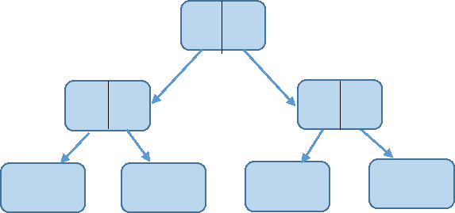

{{title_post}}
 {{title_tag}} | {{date}}
{{title_tag}} | {{date}}
Problem Description:
There is a paper of size \(w×h\) which can be cut into two pieces on the following conditions:
- If w is even then \( (w ÷ 2)×h\)
- If h is even the \(w× (h÷ 2) \)
Ideological Analysis:
We will keep dividing w and h until both of them are odd and keep counting the number of pieces. Here we have to keep in mind that the number of pieces is at least 1. That means if it is not possible to cut the paper, in another word, w and h both are odd, then the number of pieces is 1. And every time when the paper is cut, the total piece is getting multiplied by 2.

Click here for Source Code.
{{post_author}}, {{date}}
Share this article on →